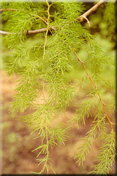

|
ECONOMICALLY
IMPORTANT PLANTS OF INDIA |
| Under-utilized Food and Fodder species and their wild relatives | Contributed by Ms.M.L Annapurna And Dr. Dhanapal, UAS, Bangalore |
Asparagus racemosus Willd.
Taxonomic Details

----- Correct Name
----- Classification
----- Synonyms
----- Common Names
Other Biological Details
----- Habit and Habitat
----- Diagnostic Features
----- Reproductive Biology
---------- Breeding System
---------- Phenology
---------- Pollinators
---------- Seed Biology
---------- Seed Germination
------ Cultivation
----- Major Pests and Diseases
Economic Potential and Uses
----- Parts Used
----- Uses
----- Harvesting Practices
----- Produce and Products
----- Chemistry
----- Processing Techniques
----- Other uses
----- Economic Potential to the
Country
----- Export Potential
Miscellaneous Information
Literature
Correct Name
: Asparagus
racemosus Willd.
Family :Liliaceae
Synonyms : A. sarmentosus; A.
Jacquemontii;
Asparagopsis sarmentosa; Asparagus racemosus var javanica;
Common Names :
English: Wild asparagus, Asparagus,
Sanskrit: Satvari
Abhiru, Satavari, Shatavari
Hindi: Shaqaqul,
Shatavir,Chatwal, Das-moor,
Das-mool, Musali, Musli, Sadabori, Safed musali, Safed mussli, Satamuli, Satavar,
Satawa, Satawari, Satwar, shakakul, shatamuli, Shataori
Bengali: Sasachigongdi,Sat mooli, Satamuli, Satamuli, shatamuli
Malayalam: Shatavali,
Satavali, Satavari, Sathavari,
Marati:Asparagus,Asvel, Chatavali, Satavarmul,
Shatavari, Shatawari,shatmuli
Tamil: Kilavari,
Catavari, Ammai kodi, Kadu mulna , Neli cedi, Ammai-kodi, Ammaikodi,
inli-chedi, Kadumulla, Kilavari, Narkanta,Nili-chedi, Satavali, Shimai-shadavari,
Shimaishadavari, Thaneer vittan kizhangu,Thanneer vittan kizhangu,
Telugu: Pillipichara,
Challagaddalu, Callagadda, Challa gadda, Chandamamagadda, Pilli gaddalu . Toalla
gaddalu , Pilli pichara, Pilli-gaddalu, Pillitega, Pillitegalu, Pillitheegalu,
Pillithegalu, Ramunijatta, Satavari, Seethamma Jatta, Toalagaddalu
Kannada: Aheruballi,
Jayibem, Abhiru, Ashadhi, Callagadda, Halavu makkala tayi, Majjigegadda,
Shatavari, Sipariberuballi
Marati:Zatar,
Shatmuli.
BioticZone: Himalaya, Palaeotropics, Plains, Subtropical Himalayas, Tropical
and subtropical parts, Tropical Himalayas, Tropics and Western Ghats.
Soil: It comes up well in sandy soil,
Availability :
Misc: All districts, Anjaneri hill, Bagdara, Baghnadi, Barhe, Bordabri, Chamundi
hills, Chelama, Chhoora, Chiknipur, Corbett National Park, Dugli, Gani, Ghana
Bird Sanctuary, Goramghat, Gundlabrahmeswaram, Haldeshwar-Mahadev R.F.
Katipada,
Katraj ghat, Khondra, Kotharia forest, Kunjanagar, Kushalgarh, M.M.Hills,
Mahaballeshwar,
Main falls, Nagulabanda, Nanasi-Ambe 8 km, Nongthala, Pakistan to Sikkim,
Ponmudi, Racherla, Rajmahal, Regional Research Station, Brahmavar, Reserve forest, Saptashringi
valley, Sawarna, Silent Valley, Sohela, Tannepada-Kharshet, Taregaon,
Thalichola, Nilambur, Tiger falls, Tondwal, Torsa and Tropical regions.
Country: Africa, Australia, India,Malaysia, S.E.Asia and Sri Lanka.
Zone: Central, East, Islands, North, North East, South and West.
State: Andaman & Nicobar, Andhra Pradesh, Arunachal Pradesh, Assam, Bihar,
Himachal Pradesh, Karnataka, Kerala, Madhya Pradesh, Maharashtra, Manipur,
Meghalaya, Mizoram, Nagaland, Rajasthan, Tamil Nadu, Tripura, Uttar Pradesh and West Bengal,
District: Agra,Ajmer, Banswara, Barmer, Bharatpur, Bilaspur, Champaran,
Chamrajnagar, Chandrapur, Dakshin Kannada, Dharmapuri, Hoshangabad, Jowai,
Kodagu, Kurnool, Malappuram, Medak, Mysore, Nasik, Palaghat, Pali, Palni hills, Pune,
Raipur, Rajnandgaon, Salem, Satara, Sirmaur, South Arcot, Tiruchi, Tirunelveli, Tonk
and Udaipur.
Taluk: Beawar, Kollegal, Pachmarhi, Palghat and Tenkasi.
Status :
DIAGNOSTIC
FEATURES
It is an under-shrub, climbs up to 1-3
m high, with stout and creeping root stock. The root occurs in clusters or fascicle
at the base of the stem with succulent and tuberous root lets. The stem is scandent,
woody, triquetrous, striate, terete and climbing. The young stem is delicate,
brittle and smooth. The spines are long, sub-recurved or straight. Cladodes
are in tufts of 2-6 in a node, slender, finely acuminate, falcate divaricate.
The flowers, solitary or fascicles, simple or branched racemes of 3 cm long.
The pedicel is slender and jointed in the middle. Perianth lobes white, fragrant
and 3 mm in length. The anthers minute and purple. The berry globular or obscurely
3 lobbed, purple-reddish, seeds hard with brittle testa.
Leaves
scaly, triangular, stiff-acuminate. Roots
tuberous. Stem terete, green, armed with spines. Cladodes 2-6 in whorls,
linear, falcate. Branches angular, woody.
Breeding System :
Phenology :
Flowering occurs in June-Dec and fruiting occurs
in cold season and also there are reports of flowering in September-May and May-October.
Pollinators:
Seed Biology :
Seed Germination :
It can be
propagated
using seeds as well as vegetative means.
1. Seed Propagation: Ripe fruits are collected, preferably in December - April,
washed thoroughly to remove the pulp and dried in the sun. As a pretreatment,
seeds are soaked in water for 2 days before sowing or treated with gibberelic
acid for 24, 48 and 96 hours, to obtain higher and early germination. Sowing
is done in June-July. Seeds are sown 2 cm below the soil on raised beds of 4.5
m x 1.2 m and 20 cm high. Lines are spaced at about 10 cm, Seeds are covered
with soil and germination takes place in 15 to 20 days. About 70 to 80 percent
seeds germinate.
2. Vegetative Propagation
Through tillers : The tillers arising from the base of a mature plant can be
separated and planted individually.
Cultivation:
Soil and Climate: Generally the crop prefers lateritic, red loamy soils, with adequate drainage. Being a shalllow rooted ccrop, it can be easily grown under such shallow and rocky soils where the soil depth is hardly 20-30cm.
The crop survives under varied agro-climatic conditions ranging from temperature to tropical hill regions. It can be grown in moderately hills like shevroys, kolli and Kalrayan hills and medium elevations of western ghat hills under condition where the elevations of western ghat hills under condition where the elevations are between 800- 1500m above MSL. It tolerates drought as well as low temperature.
Transplanting and After care:
It is propagated by root suckers or seeds. For commercial cultivation, root
suckers are preferrred over seeds. The soil is prepared well by digging upto
15 cm depth. The field is devided into convinient sized plots and laid out into
ridges at 60 cm apart. Well developed root suckers are planted on the ridges
or the seedlings of 5 cm height are removed from beds without damaging the roots
and transfered to polybags. After 2 to 3 months, they are planted in the field
in 45 x 45 x 45 cm pits spaced at 1 m x 1 m. Standards are provided for facilitating
twining of the plants. August is the best
month for transplanting.
MAJOR PESTS
& DISEASES
Pests:
Diseases:
No serious pests and diseases has been reported in this crop.
Uses:
1.It is used as an ornamental Plant.
Harvesting
Practices
The roots come to maturity in about 12-14 months after plantig depending
upon the soil and climatic conditions. A single plant may yield about 500-600
gm of fresh root. On an average, 12,000 to 14,000 Kg of fresh roots can be harvested
from one hectare area which on drying may yield about 1000-1200 Kg of dried
roots.
Produce and Products
There are variety of products like, Abana, Diabecon, Evecare, Geriforte, Lukol,
Renalka, Shatavari Capsules.
Pharmacology: Alcoholic extract has anti-oxytocic activity, saponin-glycoside (A4) produced a specific and competitive block of the pitocin-induced contraction of rat, guinea pig and rabbit uteri in vitro and in situ. It also blocked the spontaneous uterine motility. Also found that the hypotensive action of syntocinin in cat was unaffected by previous administration of saponin A4 (Gaitonde and Jetmalani, Arch Int Pharmacodyn, 179, 121, 1969; Indian J Pharm, 31, 175, 1969). Root extracts increase the weight of mammary glands in post-partum and estrogens-primed rats and uterine weight in estrogens-primed group (Sabnis, Indian J Exptl Biol, 6, 55, 1968). It also has galactogogue action in buffaloes (Patel, Indian Vet J, 46, 718, 1969). It increased the force and rate of contraction in isolated frog's heart, but in higher doses it caused cardiac arrest (Roy, Indian J Pharm, 30, 289, 1968; 6,132, 1971). Both aerial parts and roots have amylase and lipase activities (Dange, Planta Medica, 17, 393, 1969). Aerial parts have anticancer activity in human epidermal carcinoma of the nasopharynx (Dhar, Indian J Exptl Biol, 6,232,1968).
Clinical studies: It is proved that it increases milk production in lactating women.
Toxicology: There is no report of toxic and adverse effects on use of this plant but Asparagus officinalis is an allergenic plant (Tampion, J. Dangerous Plants).
Processing Techniques
Farooqi, A.A., Khan, M.M. , Vasundhara, M., Production Technology of Medicinal and Aromatic crops Natural Remidies PVT. LTD. Publications p 97-98.
Oomachan, M.(1977)